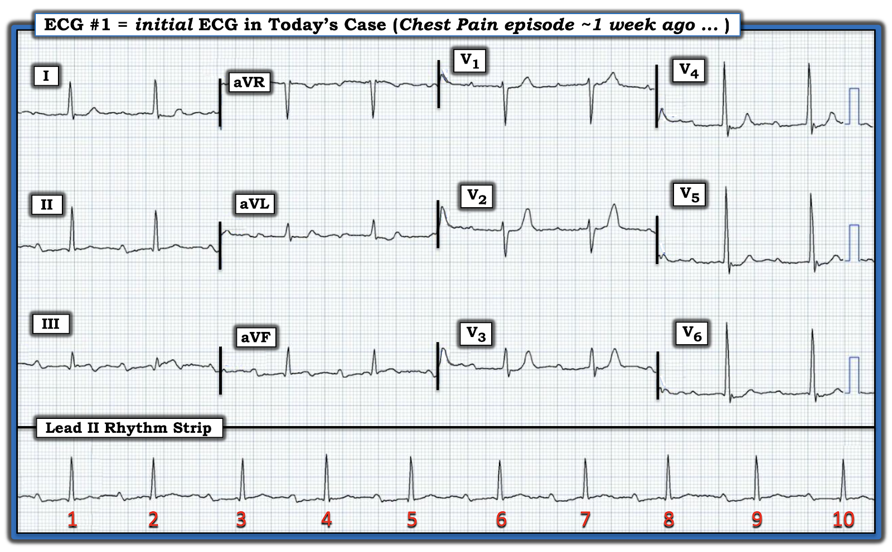
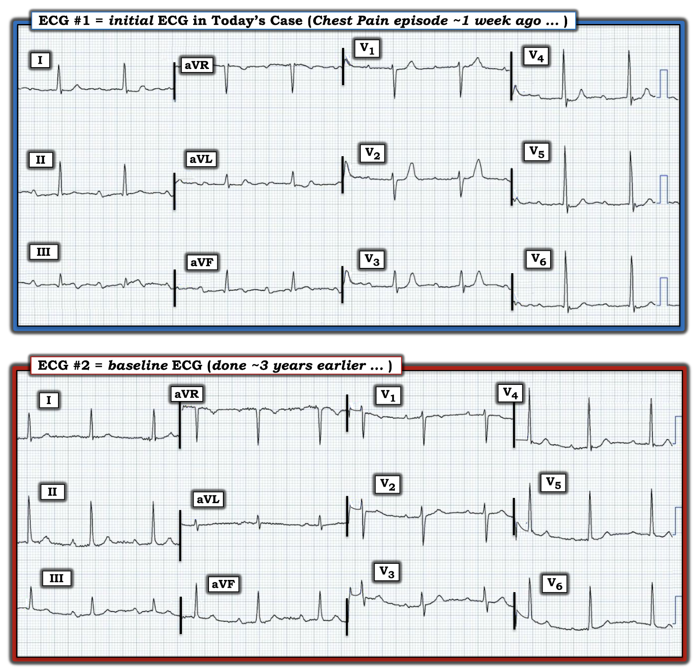

ECG Blog #352 — Đau ngực 1 tuần trước ...
Điện tâm đồ ở Hình-1 được ghi từ một phụ nữ ngoài 80 tuổi — đến khám với tiền sử có 1 cơn đau ngực trong tuần trước. Từ đó đến nay không đau ngực nữa.
CÂU HỎI:
- Với tiền sử này — Điều gì đã xảy ra?
- BẠN sẽ đọc điện tâm đồ ở Hình-1 như thế nào?


SUY NGHĨ CỦA TÔI về điện tâm đồ ở Hình-1:
Cơ chế nhịp ở điện tâm đồ #1 là nhịp xoang (tức là, sóng P có mặt và dương ở chuyển đạo II — với khoảng PR hằng định suốt dải nhịp (rhythm strip) DII dài). Khoảng R-R thay đổi nhẹ — với tần số chung ~60/phút.
- Khoảng PR kéo dài rõ rệt (tức là, tới ~0.40 giây) — nên đây là loạn nhịp xoang (sinus arrhythmia) kèm blốc AV độ 1 (1st-degree AV block).
Về các khoảng khác — QRS không rộng — và QTc có vẻ không kéo dài. Trục mặt phẳng trán bình thường, khoảng +40 độ. Không có dấu hiệu chắc chắn của lớn buồng tim.
Về Thay đổi Q-R-S-T:
- Các sóng Q nhỏ và hẹp, chưa rõ ý nghĩa, thấy ở mỗi chuyển đạo thành dưới.
- Ngoài ra, có thể có các sóng q vách (septal q waves) nhỏ, không có ý nghĩa, ở các chuyển đạo trước tim phía bên.
- Tăng tiến sóng R (R wave progression) ở các chuyển đạo trước tim cho thấy một "vùng" chuyển tiếp bình thường (ở chỗ sóng R trở nên cao hơn độ sâu của sóng S trong khoảng giữa chuyển đạo V2 và V3). Dù vậy — sự chuyển tiếp này đột ngột hơn bình thường, với sóng R khá đột ngột trở nên ưu thế ở chuyển đạo V3.
Về Thay đổi ST-T:
- Ở các chuyển đạo thành dưới — có ST chênh lên nhẹ ở chuyển đạo III — sóng ST-T dẹt ở chuyển đạo II — và gợi ý ST dạng vòm (ST coving) với sóng T đảo ngược phần cuối nhẹ-nhưng-thật ở chuyển đạo III và aVF.
- Việc các dấu hiệu này là "thật" — được củng cố khi nhận ra thay đổi soi gương (reciprocal change) ở các chuyển đạo bên cao I và aVL (trong đó đoạn ST dẹt, chênh xuống nhẹ và phần cuối sóng T dương).
- ĐIỂM THEN CHỐT (PEARL) #1: Đọc các thay đổi ở chuyển đạo chi trên bản ghi hôm nay là một thử thách — vì nhiễu đường nền và hậu quả của nó là hình dạng sóng ST-T khác nhau giữa 2 nhát thấy ở mỗi chuyển đạo chi. Dù vậy — Điều quan trọng là, dù hình dạng sóng ST-T của mỗi nhát trong 5 chuyển đạo chi này có phần thay đổi — hình ảnh tổng thể (tức là, "Gestalt") của sóng ST-T ở các chuyển đạo chi này vẫn phù hợp với một "chủ đề" chung, đó là — ở một bệnh nhân kể lại một cơn đau ngực gần đây nay đã hết — các dấu hiệu này gợi ý một biến cố mới xảy ra mà nay biểu hiện sóng T tái tưới máu ở các chuyển đạo thành dưới.
- ĐIỂM THEN CHỐT (PEARL) #2: Vì OMI thành dưới cấp hoặc mới xảy ra rất thường đồng thời biểu hiện thay đổi điện tâm đồ của OMI thành sau — tôi lập tức tập trung đánh giá những thay đổi như vậy ở các chuyển đạo trước tim phía trước. OMI thành sau mới xảy ra được gợi ý trên điện tâm đồ #1 bởi: i) Đoạn ST dẹt bất thường rõ rệt ở các chuyển đạo trước tim phía trước; ii) Sóng T cao, đối xứng đến bất ngờ ở các chuyển đạo V1 đến V4 (rõ nhất ở V2,V3), phù hợp với sóng T tái tưới máu thành sau; và, iii) Sóng R ưu thế xuất hiện đột ngột ở chuyển đạo V3 (Xem ECG Blog #351 — để biết thêm về các chủ đề này).
- Hoàn tất việc đánh giá thay đổi ST-T — Lưu ý rằng đoạn ST dẹt kèm ST chênh xuống nhẹ tiếp tục trải khắp vùng trước tim, lan tới các chuyển đạo trước tim phía bên (tức là, chuyển đạo V4,V5,V6).
- ĐIỂM THEN CHỐT (PEARL) #3: Như đã bàn gần đây nhất ở ECG Blog #350 — có sự "mất cân đối" sóng T (T wave imbalance) ở các chuyển đạo trước tim. Nghĩa là, khi sóng T ở cả 6 chuyển đạo trước tim đều dương — bình thường sóng T ở chuyển đạo V1 không cao hơn sóng T ở chuyển đạo V6 (như trên Hình-1). Dấu hiệu này đôi khi là manh mối gợi ý OMI mới xảy ra (đặc biệt khi động mạch thủ phạm là LCx).
Điện tâm đồ #1 — Tổng hợp tất cả lại:
Chuỗi biến cố và các dấu hiệu điện tâm đồ mô tả ở trên có thể ghép lại thành một câu chuyện nhất quán:
- Tiền sử trong ca hôm nay (tức là, một phụ nữ lớn tuổi kể lại một cơn đau ngực nhiều ngày trước — nhưng nay đã hết) — phù hợp với một biến cố mới xảy ra.
- Tắc động mạch vành cấp thường được theo sau bởi sự tái thông tự phát của động mạch "thủ phạm". Về lâm sàng — các biến cố này được gợi ý khi cơn đau ngực hết vào cùng khoảng thời gian thấy sóng T tái tưới máu trên điện tâm đồ. Sự hiện diện của các sóng T tái tưới máu như vậy ở vùng thành dưới và thành sau trên điện tâm đồ #1 — gợi ý động mạch "thủ phạm" là RCA (Right Coronary Artery — động mạch vành phải) hoặc LCx (Left Circumflex — động mạch mũ trái). Dù phần lớn mọi người có ưu thế RCA — dấu hiệu "mất cân đối" sóng T ở chuyển đạo trước tim lại nghiêng về LCx là "thủ phạm". Điểm MẤU CHỐT: Dù động mạch thủ phạm hóa ra là động mạch nào — chuỗi biến cố mô tả ở trên vẫn phù hợp với sự tái tưới máu tự phát, đặc trưng của Hội chứng Wellens (Xem ECG Blog #350).
- Dù Hội chứng Wellens thường gặp nhất liên quan đến hẹp nặng đoạn gần LAD (Left Anterior Descending — động mạch liên thất trước) gây sóng T tái tưới máu thành trước — cùng cơ chế bệnh sinh đó của Hội chứng Wellens cũng có thể gặp dưới dạng sóng tái tưới máu dưới-sau do tắc RCA hoặc LCx mới xảy ra (Xem ECG Blog #326).
- ĐIỂM THEN CHỐT (PEARL) #4: Tầm quan trọng của việc nhận ra mối tương quan giữa các dấu hiệu điện tâm đồ và tiền sử trong ca hôm nay (tức là, tiền sử đau ngực trước đó đã hết vào thời điểm thấy sóng T tái tưới máu trên điện tâm đồ #1) — gợi ý cần thông tim kịp thời, nhiều khả năng cần PCI tùy kết quả thông tim (để ngăn động mạch "thủ phạm" đã tự tái thông bị tắc lại).
=================================
CÂU HỎI:
- Khả năng bệnh nhân hôm nay đã bị blốc AV độ 2 Mobitz I hồi đầu tuần là bao nhiêu?
TRẢ LỜI:
Bệnh nhân nhồi máu cơ tim (MI) thành dưới cấp thường xuất hiện một chuỗi rối loạn dẫn truyền AV theo từng bậc, do thiếu máu cục bộ kèm theo ở nút AV.
- Rối loạn dẫn truyền ở những bệnh nhân này thường bắt đầu bằng PR kéo dài đơn thuần của blốc AV độ 1 — sau đó tiến triển thành blốc AV độ 2 loại Mobitz I (tức là, Wenckebach AV). Một số bệnh nhân cuối cùng tiến triển thành blốc AV độ 3 (tức là, hoàn toàn), thường nhất với nhịp thoát QRS hẹp (từ nút AV).
- Trong hầu hết các trường hợp có rối loạn dẫn truyền AV kèm MI thành dưới cấp — sự tiến triển diễn ra tuần tự (tức là, từ độ 1 — sang độ 2 — sang độ 3). Rối loạn dẫn truyền ở những bệnh nhân này thường thoáng qua — thoái lui theo trình tự ngược lại trong vài ngày đến 1-2 tuần sau đó, khi bệnh nhân hồi phục sau nhồi máu.
- ĐIỀU CỐT LÕI: Việc bệnh nhân hôm nay mới bị MI thành dưới — và nay đến khám với khoảng PR kéo dài rõ rệt — hoàn toàn có thể phù hợp với việc gần đây đã có blốc Mobitz I, nay đang dần thoái lui khi bà hồi phục sau nhồi máu.
- ĐIỂM THEN CHỐT (PEARL) #5: Phần lớn bệnh nhân blốc AV độ 1 vẫn không có triệu chứng và không cần can thiệp. Điều này càng đúng khi mức độ blốc AV độ 1 không nặng (tức là, khoảng PR dưới 0.30 giây). Một khi khoảng PR kéo dài quá 0.30 giây (như ở bệnh nhân hôm nay) — sự chậm trễ co bóp thất có thể khiến tâm nhĩ co bóp khi van nhĩ thất đã đóng, làm giảm cung lượng tim. Điều này có thể dẫn tới một loạt triệu chứng giống với “hội chứng máy tạo nhịp” (tức là, chóng mặt, mệt mỏi, choáng váng, tiền ngất/ngất, khó thở và/hoặc đau ngực).
- Đôi khi — triệu chứng ở bệnh nhân có khoảng PR kéo dài rõ rệt có thể đủ nặng để phải cấy máy tạo nhịp vĩnh viễn.
So sánh với điện tâm đồ Trước đó:
Đã tìm được một điện tâm đồ trước đây (nền) của bệnh nhân hôm nay. Để rõ ràng, ở Hình-2 — tôi đặt điện tâm đồ trước đó này (ghi ~3 năm trước — khi bệnh nhân không có triệu chứng) — cạnh điện tâm đồ đầu tiên của hôm nay.
CÂU HỎI:
- Việc so sánh 2 bản ghi ở Hình-2 có ủng hộ giả thuyết của chúng ta về chuỗi biến cố nhiều khả năng đã xảy ra trong ca hôm nay không?


So sánh 2 điện tâm đồ ở Hình-2:
Đọc điện tâm đồ đầu tiên hôm nay dưới ánh sáng của bản ghi nền ~3 năm trước — cho nhiều điều đáng suy ngẫm. Lưu ý sự vắng mặt của các dấu hiệu sau trên điện tâm đồ #2:
- Ở các chuyển đạo thành dưới của điện tâm đồ #2 — không có ST chênh lên hay sóng T đảo ngược trên bản ghi nền này.
- Ở các chuyển đạo bên cao (tức là, chuyển đạo I, aVL) — không có ST chênh xuống kèm phần cuối sóng T dương.
- Ở các chuyển đạo trước tim phía trước — đoạn ST dốc lên thoai thoải (đúng như bình thường) ở chuyển đạo V2,V3,V4 — và sóng T ở chuyển đạo V1 đến V4 không cao cũng không nhọn.
- Không có ST chênh xuống ở chuyển đạo trước tim phía bên (ở V4,V5,V6) — và không có "mất cân đối" sóng T (tức là, Không có sóng T dương ở chuyển đạo V1 cao hơn ở chuyển đạo V6).
- Tăng tiến sóng R trên bản ghi nền diễn ra tự nhiên hơn (tức là, Thay vì chuyển tiếp đột ngột sang QRS dương ưu thế ngay tại chuyển đạo V3 — sự chuyển tiếp sang dương ưu thế ở các chuyển đạo trước tim diễn ra từ từ hơn trên điện tâm đồ #2).
CÂU HỎI:
- BẠN có nhận thấy rằng blốc AV độ 1 đã có mặt trên điện tâm đồ nền? (dù ở mức độ nhẹ hơn đáng kể = 0.26 giây).
KẾT LUẬN CA BỆNH:
Dù tôi không có thông tin theo dõi cụ thể cho ca hôm nay — vẫn có thể đưa ra một số nhận xét khép lại.
- Bối cảnh lâm sàng trong ca hôm nay khác với bối cảnh thường gặp hơn ở ED (Emergency Department — khoa cấp cứu) — hay tại hiện trường bởi nhân viên EMS — ở chỗ thay vì đến khám lúc đang có triệu chứng cấp — bệnh nhân lại đến khám nhiều ngày sau cơn đau ngực cấp. (Điều này phù hợp hơn nhiều với những gì tôi từng gặp khi là bác sĩ chăm sóc ban đầu (Primary Care Attending) tại Trung tâm Y học Gia đình của chúng tôi, nơi tôi đã làm việc 30 năm.)
- Bệnh nhân có triệu chứng đau ngực cấp nặng thường "tự sàng lọc" — hoặc gọi thẳng EMS, hoặc tự đến ED hay đi cùng người nhà. Vì phần lớn bệnh nhân tử vong do MI cấp đều tử vong trong 24-48 giờ đầu sau khởi phát — thật đáng suy ngẫm khi nhận ra rằng bệnh nhân chỉ đến khám vài ngày sau khi có triệu chứng có lẽ đã vượt qua giai đoạn "nguy cơ cao nhất" của mình.
- Với tiền sử trong ca hôm nay (được diễn giải cùng với 2 điện tâm đồ ở Hình-2) — Chúng ta đã xác nhận rằng mọi dấu hiệu sóng ST-T mô tả ở trên cho điện tâm đồ #1 đều mới xuất hiện so với bản ghi nền. Điều này ủng hộ giả thuyết rằng điện tâm đồ đầu tiên trong ca hôm nay phản ánh tái tưới máu sau một OMI mới xảy ra nhiều ngày trước. Phù hợp với Hội chứng Wellens — thông tim kịp thời vẫn được chỉ định để làm rõ giải phẫu, dù động mạch "thủ phạm" nhiều khả năng đang thông vào lúc này vì bệnh nhân vẫn không đau.
- Mặt khác — blốc AV độ 1 không phải mới! — vì khoảng PR đã là ~0.26 giây trên bản ghi nền ghi ~3 năm trước. Do đó (trừ khi có thêm các bản ghi nền khác) — chúng ta thực sự không biết liệu mức độ blốc AV độ 1 của bệnh nhân này đã nặng dần qua nhiều năm — hay — rối loạn dẫn truyền của bà vẫn ổn định với khoảng PR ~0.26 giây suốt 3 năm qua, rồi chỉ tăng lên trong tuần vừa rồi vào lúc xảy ra OMI cấp. Câu trả lời cho câu hỏi này có thể ảnh hưởng đến khả năng cần tạo nhịp vĩnh viễn ở người phụ nữ lớn tuổi này (tức là, Như đã nêu ở trên — nếu blốc AV độ 1 nặng của bà vẫn tồn tại hoặc nặng thêm — có thể cuối cùng sẽ cần tạo nhịp vĩnh viễn).
==================================
Lời cảm ơn: Xin cảm ơn Arron Pearce (từ Manchester, Vương quốc Anh) đã chia sẻ ca bệnh và bản ghi này.
==================================
Các Bài ECG Blog liên quan đến ca hôm nay:
- ECG Blog #205 — Ôn lại Cách Tiếp cận hệ thống của tôi để đọc điện tâm đồ 12 chuyển đạo.
- ECG Blog #193 — minh họa cách dùng Nghiệm pháp Soi gương (Mirror Test) để giúp nhận ra MI thành sau cấp. Bài này ôn lại những điều cơ bản để dự đoán Động mạch "Thủ phạm" (đồng thời ôn lại vì sao thuật ngữ "STEMI" — nên được thay bằng "OMI" = Occlusion-based MI — nhồi máu cơ tim do tắc).
- ECG Blog #285 — và ECG Blog #246 — và ECG Blog #80 — là các ví dụ về MI thành sau cấp (có dùng Nghiệm pháp Soi gương để hỗ trợ chẩn đoán).
- ECG Blog #317 — ôn lại việc dùng (hay không dùng) các chuyển đạo thành sau.
- ECG Blog #184 — và ECG Blog #167 — ôn lại mối quan hệ đối nghịch như ảnh soi gương "kỳ diệu" giữa chuyển đạo III và chuyển đạo aVL giúp khẳng định OMI cấp.
- Bài ngày 16 tháng 2 năm 2019 trên Dr. Smith's ECG Blog — Bình luận của tôi (ở cuối trang) nhấn mạnh giá trị của Nghiệm pháp Soi gương trong chẩn đoán MI thành sau cấp.
- Chẩn đoán OMI từ điện tâm đồ đầu tiên — Các bản ghi liên tiếp cho thấy tái tưới máu tự phát — rồi tắc lại! — Xem Bình luận của tôi ở cuối trang trong bài ngày 14 tháng 10 năm 2020 trên Dr. Smith's ECG Blog.
- OMI cấp không được bác sĩ phụ trách (Attending) chấp nhận — Xem Bình luận của tôi ở cuối trang trong bài ngày 21 tháng 11 năm 2020 trên Dr. Smith’s ECG Blog.
- Một OMI khác bị bỏ sót (Bác sĩ tim mạch bị bó buộc bởi Định nghĩa STEMI — OMI thấy rõ nhờ Nghiệm pháp Soi gương) — Xem Bình luận của tôi ở cuối trang trong bài ngày 21 tháng 9 năm 2020 trên Dr. Smith’s ECG Blog.
- Nhận ra sóng T tối cấp — các nhóm chuyển đạo — một OMI (dù không phải STEMI) — Xem Bình luận của tôi ở cuối trang trong bài ngày 8 tháng 11 năm 2020 trên Dr. Smith's ECG Blog.
- ECG Blog #258 — Cách "Định tuổi" một Nhồi máu dựa trên điện tâm đồ đầu tiên.
- ECG Blog #294 — Ôn lại cách nhận biết LIỆU động mạch "thủ phạm" đã được tái tưới máu hay chưa.
- ECG Blog #230 — Ôn lại cách so sánh các điện tâm đồ liên tiếp.
- ECG Blog #115 — Cho thấy thay đổi ST-T ngoạn mục có thể xảy ra chỉ trong vòng 8 phút.
- ECG Blog #268 — Cho thấy một ví dụ về sóng T tái tưới máu.
- ECG Blog #337 — Một ca "NSTEMI" mà thực chất là OMI đang diễn ra với thời gian không rõ (biểu hiện bằng sóng T tái tưới máu ở các chuyển đạo thành dưới).
- ECG Blog #350 — Ôn lại một ca Hội chứng Wellens (với "mất cân đối" sóng T ở các chuyển đạo trước tim giữa chuyển đạo V1,V6).